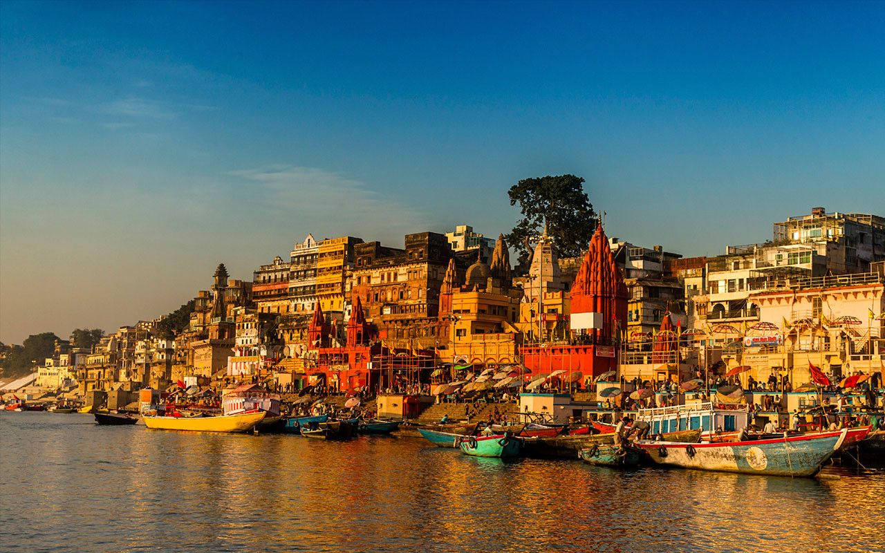

Famous Ghat In Varanasi
-
Dashashwamedh Ghat

As the name suggests, it is believed that this is the place where Lord Brahma performed the Dasa Ashwamedha sacrifice. This ghat is a religious spot and many rituals are performed here.
Visit at the time of Kartik Purnima to witness a celestial manifestation in the city of lights - Dev Deepavali. This Ghat is most famous for the Ganga Aarti conducted every evening, and hundreds of people visit it every day. Watching the Ganga Aarti is an experience which cannot be explained in words. When in Varanasi, make sure not to miss this calming experience.
-
Assi Ghat

The Assi Ghat is placed at the confluence of the Rivers Assi and Ganga and is famous for the large Shiva Lingam installed under a peepal tree. It has immense religious importance and has been mentioned in the Puranas and various legends as well.
Assi Ghat is the heart of Varanasi and the locals, as well as, the tourists flock there to enjoy the amazing view of the sunset and sunrise at the Ganges. It is where tourists and foreigners who travel and stay in Varanasi for a prolonged period live. The Ghat has been a famous spot among the local youths to while away their time in the evening. Recently, the Ghat started having Aarti in the morning which is a must watch if you want to experience the true feel of Varanasi. Also, the tourists generally travel from Assi to Dashaswamedh Ghat in the evening by boat, to see the famous aarti conducted there every evening which is an experience like none other. Assi ghat is near Banaras Hindu University, and hence it is frequented by students.
-
Manikarnika Ghat

Manikarnika Ghat is one of the holiest cremation grounds among the sacred riverfronts (ghats), alongside the river Ganga, in the city of Varanasi in the Indian state of Uttar Pradesh. In Hinduism, death is considered as a gateway to another life marked by the results of one's karma. It is believed that a dead human's soul attains moksha, and hence breaks the cycle of rebirth when cremated here.Thus, scores of the elderly across the whole country seek to walk up to its edges, and spend their last days absorbing the charisma of the ghat making death painless and insignificant to be pondered upon.
The ghat is named after Sati's earrings which fell here. The Hindu genealogy registers at Varanasi are kept here.